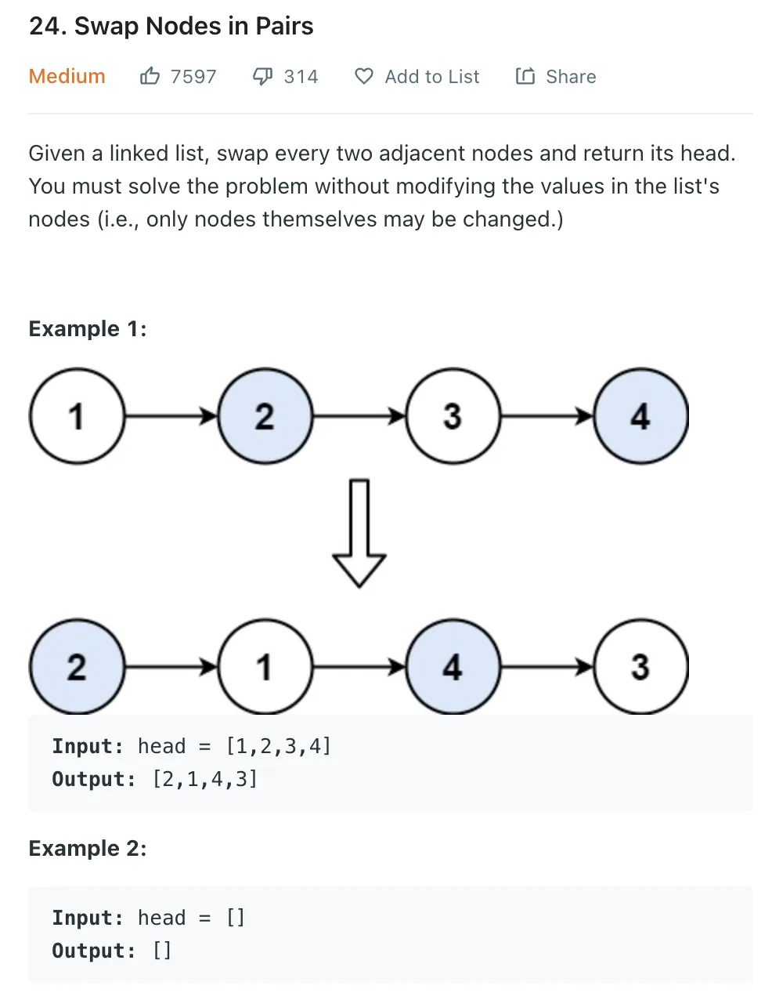
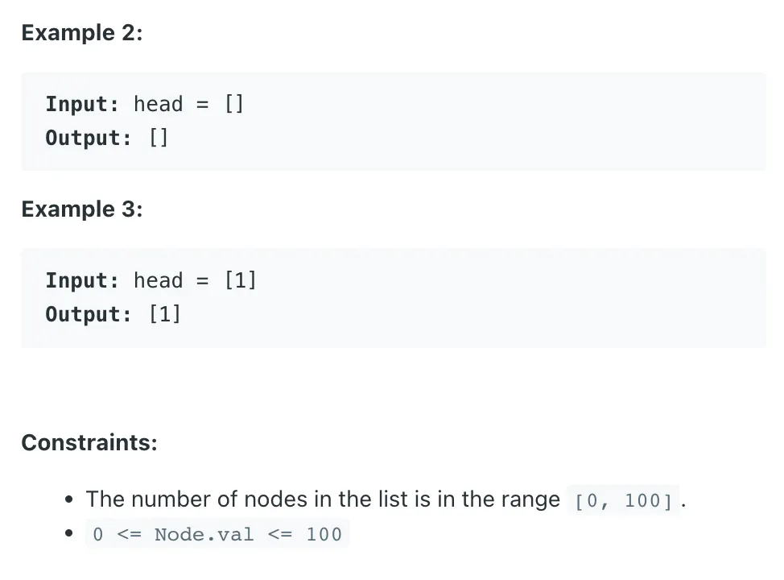
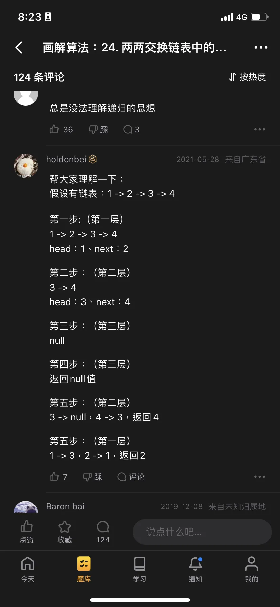

24. Swap Nodes in Pairs
考過的公司：Amazon、Bytedance
Question


✍🏽 My Solution
class Solution {
public ListNode swapPairs(ListNode head) {
ListNode dummy = new ListNode(0);
ListNode prev = dummy;
dummy.next = head;
while (prev.next != null && prev.next.next != null) {
ListNode first = prev.next;
ListNode second = prev.next.next;
first.next = second.next;
second.next = first;
prev.next = second;
prev = first;
}
return dummy.next;
}
🧠 Thought Process
- What mistakes did I make?
- prev = first;
- 終止條件寫錯
- while 條件寫錯
Solution #1 [單純鏈表操作]
Runtime: 0 ms, faster than 100.00% of Java online submissions for Swap Nodes in Pairs. Memory Usage: 42.5 MB, less than 5.14% of Java online submissions for Swap Nodes in Pairs.
class Solution {
public ListNode swapPairs(ListNode head) {
ListNode dummy = new ListNode(0);
ListNode prev = dummy;
dummy.next = head;
while (prev.next != null && prev.next.next != null) {
ListNode first = prev.next;
ListNode second = prev.next.next;
prev.next = second;
first.next = second.next;
second.next = first;
prev = first;
}
return dummy.next;
}
}
Explanation (in my words)
- What is the space/time complexity of their solution?
- time:O(n)
- space:O(1)
Solution #2 [Recursive]
class Solution {
public ListNode swapPairs(ListNode head) {
if(head == null || head.next == null){
return head;
}
ListNode second = head.next;
head.next = swapPairs(second.next);
second.next = head;
return next;
}
}
Explanation (in my words)
-
How does their solution work?
- 其中我们应该关心的主要有三点： 1. 返回值 2. 调用单元做了什么 3. 终止条件
在本题中：
- 返回值：交换完成的子链表
- 调用单元：设需要交换的两个点为 head 和 next，head 连接后面交换完成的子链表，next 连接 head，完成交换
- 终止条件：head 为空指针或者 next 为空指针，也就是当前无节点或者只有一个节点，无法进行交换
